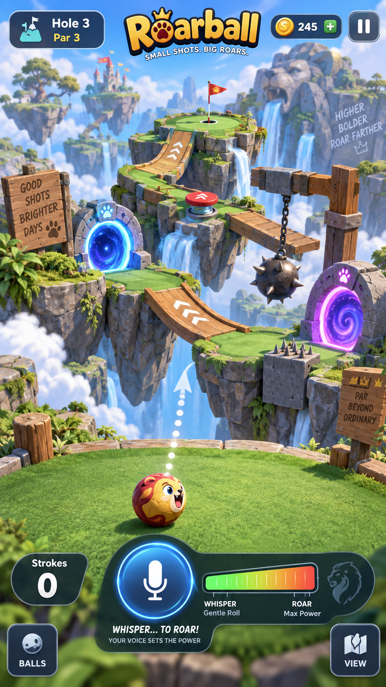
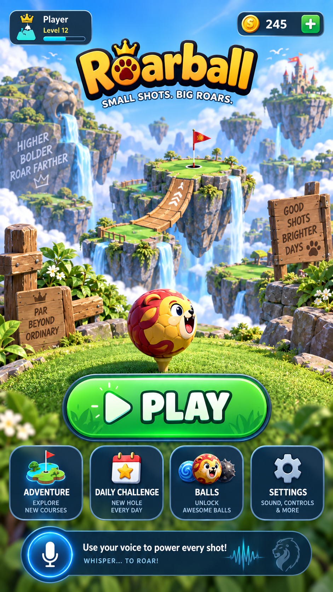
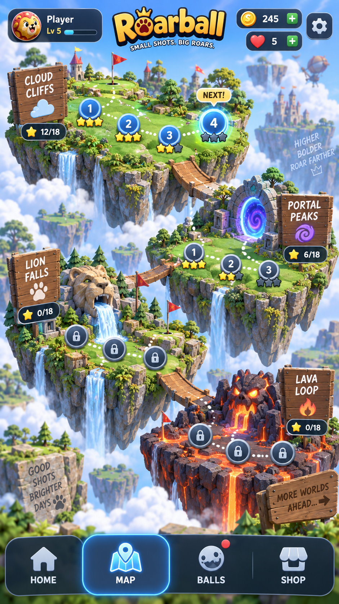
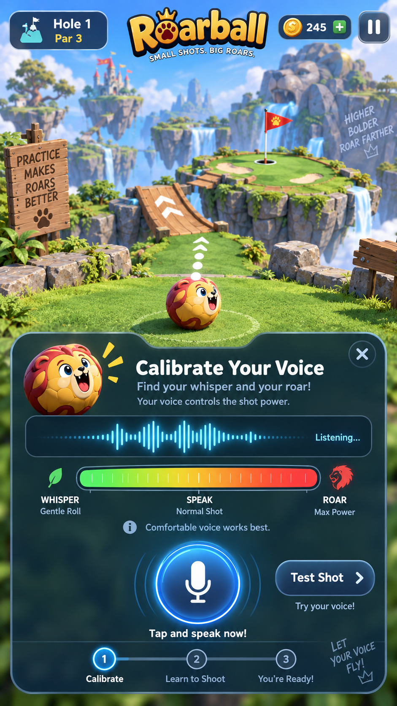
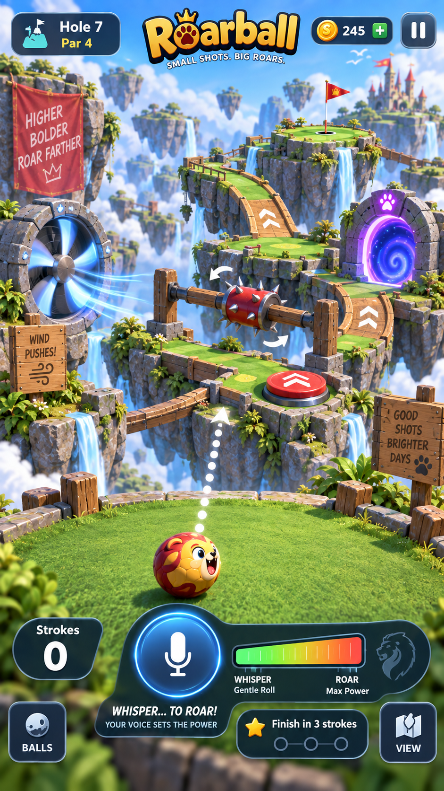
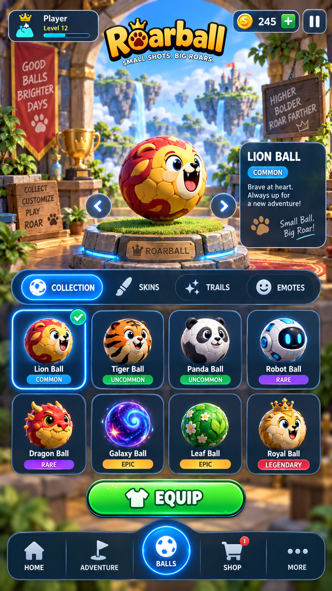
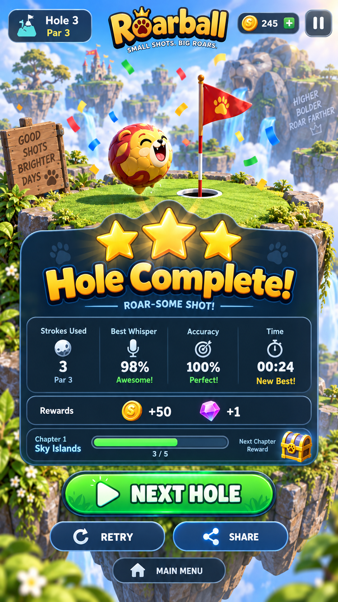

Original gameplay
{kind=link}

Build direction: Keep the lion, floating turf, flags and playful depth. Use a compact header, real shot/cancel states and no currency UI.
Seven existing visual concepts, with concrete implementation notes for the Godot MVP.

Build direction: Keep the lion, floating turf, flags and playful depth. Use a compact header, real shot/cancel states and no currency UI.

Build direction: Keep the hero and clear Play button. MVP navigation is Play, Map, Balls and Settings. Remove daily challenge, account level and coins.

Build direction: MVP has Cloud Cliffs and Portal Peaks, six holes each. Remove hearts, shop and extra worlds. Completion unlocks the next hole.

Build direction: Implement explicit Room / Soft / Strong stages, a Touch alternative, real permission/error states and verified capture lifetime.

Build direction: Use reusable ramps, gates, one portal pair and pads. Wind is deferred. Concept composition is not proof a layout is solvable.

Build direction: Lion, Panda and Robot only, with identical physics. No rarity, shop, currency, trails or emote economy in MVP.

Build direction: Show earned stars, strokes, par and world progress. Remove fabricated whisper/accuracy percentages, gems and required sharing.
{kind=link}
{kind=link}
{kind=link}
{kind=link}
{kind=link}
{kind=link}